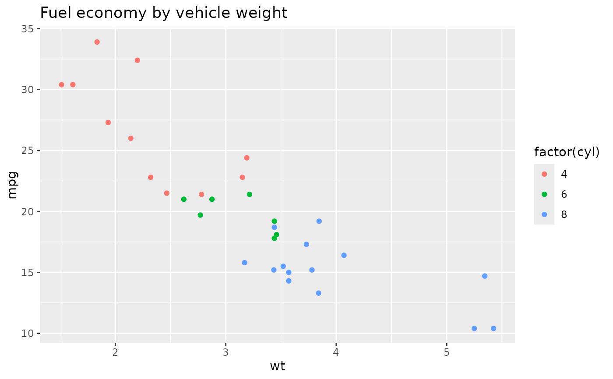
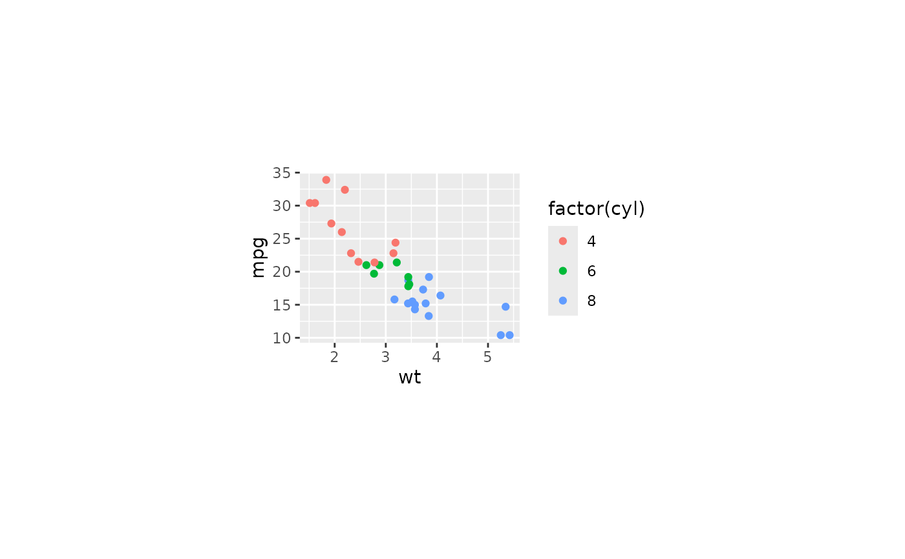
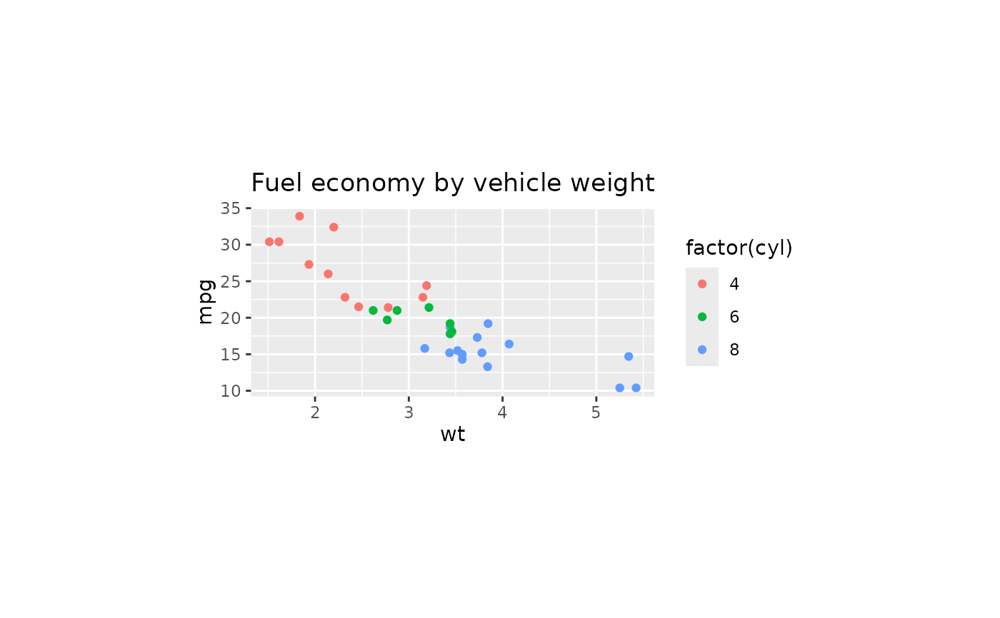

Build a compact plot by choosing a physical panel size and expanding it for
dense in-panel text or overflowing plot labels. A shared point-size baseline
harmonizes ggplot, patchwork, and recorded grid text such as wrapped
ComplexHeatmap output while preserving their relative hierarchy. Constant
data-label text is enlarged conservatively when space permits. The
calculation delegates final layout and saving to
panel_fix() while preserving label content, fixed aspect ratios, patchwork
layouts, and that function's behaviour.
Usage
plot_autosize(
x,
panel_width = 45,
panel_height = 35,
margin = 2,
units = "mm",
save = NULL,
dpi = 300,
base_size = "auto",
label_autosize = TRUE,
verbose = FALSE
)Arguments
- x
A ggplot object, grob, or combined plot accepted by
panel_fix().- panel_width, panel_height
Base panel width and height.
- margin
Outer margin.
- units
Units for panel dimensions and margin. See
grid::unit().- save
NULLor a file name to save the fitted plot.- dpi
Resolution used when saving raster output.
- base_size
"auto"to harmonize ggplot and grid text to one inferred base size in points, a positive point size, orNULLto preserve each component's typography.- label_autosize
Whether to enlarge constant
geom_text,geom_label, and ggrepel label sizes when the panel has enough horizontal space.- verbose
Whether to report messages from
panel_fix().
Value
A plot with size and autosize attributes. Ordinary plots are
returned through panel_fix(); wrapped grid content is preserved directly.
Examples
library(ggplot2)
p <- ggplot(mtcars, aes(wt, mpg, colour = factor(cyl))) +
geom_point()
p1 <- p +
labs(title = "Fuel economy by vehicle weight")
p1

p2 <- plot_autosize(p)
p2

attr(p2, "size")
#> $width
#> [1] 90.68879
#>
#> $height
#> [1] 51.9233
#>
#> $units
#> [1] "mm"
#>
plot_autosize(p1)
